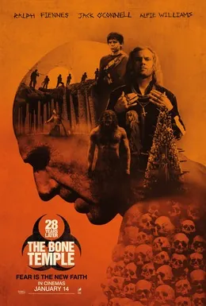

The genetics
The Rage Virus at the heart of the 28 Days Later series is, in the franchise's backstory, a man-made pathogen; this film's sources do not discuss its origin, and its genetics remains in the background. The film's scientist is Dr. Ian Kelson, a former family doctor who memorialises the dead and, through patient experiment on the Alpha infected Samson, develops the idea that the rage is driven by hallucinations and could be treated with antipsychotics. His drugs return Samson to lucidity and speech, the first hint in the series that the infection might be curable. Kelson is presented as deeply humane, set against the human cruelty of Jimmy Crystal's gang; critics noted that the real danger in the film comes from people rather than the infected. His treatment is pharmacological, not genetic.
How genetics is portrayed
- Overall portrayal of genetics
- mixed The backdrop is a man-made virus that destroyed a nation, while the film's scientist is its most humane figure and his research offers the first hope of treatment; the evil is human cruelty rather than science.
- Outcome of the genetic intervention
- mixed The Rage Virus has devastated Britain, but Kelson's treatment of a carrier of the lab-born pathogen restores Samson's humanity and opens a hope of cure.
- Dr. Ian Kelson
- hero Aim: benevolent, curiosity (positive). The former GP experiments on the infected Samson with morphine and antipsychotics, restoring his lucidity and suggesting the virus is treatable; the film presents him as humane and he dies turning the gang against its leader.
The story
In a Britain still ravaged by the Rage Virus, this sequel to 28 Years Later follows two stories. The boy Spike falls in with the Fingers, a gang led by the psychopath "Sir Lord" Jimmy Crystal, who claims to be the son of Satan and has his followers skin captured survivors alive. Meanwhile Dr. Ian Kelson, a former GP who tends the Bone Temple, an ossuary for the epidemic's dead, befriends Samson, a hulking Alpha infected who keeps coming back for the morphine darts Kelson shoots at him. Suspecting that the virus causes rage through psychotic hallucinations, Kelson gives Samson antipsychotics; Samson regains lucidity and memories and resists reinfection. When Jimmy forces Kelson to impersonate Satan for the gang, Kelson turns the Fingers against him and is fatally stabbed. Spike and the gang member Kellie kill Jimmy, Samson thanks the dying Kelson and carries him away, and the fleeing pair are spotted by Jim, a survivor of the original outbreak.